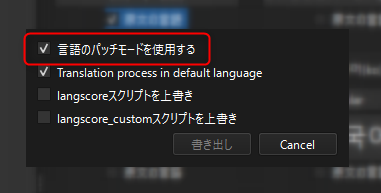

言語パッチ機能¶
言語パッチモードは、翻訳データの管理方式を従来の翻訳CSVファイルから、「言語ごとの個別CSVファイル」に変更できる機能です。
言語パッチモードの最大の特徴は、あらかじめ許可されている言語であれば、任意の言語を個別に追加可能である という点です。
これにより、特定の言語だけの翻訳CSVを配布することが可能となります。
有効にする¶
言語パッチモードを有効にするには、プラグインの更新または翻訳データを書き出す際に、以下のオプションにチェックを入れてください。
CSVの配置場所¶
従来のCSVの配置場所:
Data/Translate以下に全ての翻訳CSVを配置。
言語パッチモード有効時のCSV配置場所:
Data/Translate/(言語コード)フォルダに各言語のCSVを配置。MV/MZバージョンの場合は
data/translate/(言語コード)フォルダに配置。
この (言語コード) フォルダを「言語フォルダ」と呼称します。
警告
言語パッチモードはMV/MZのWebブラウザ実行時では使用できません。従来の方法を使用して下さい。
変数に言語の読み込み状態を格納する¶
変数に対して言語の読み込み状態のフラグを格納することが出来ます。-1が指定されている場合は何もしません。
指定した変数から、Langscoreで対応している言語の言語フォルダが存在しているかが格納されます。
存在していれば1、存在していなければ0となります。
Ver.0.8.8時点では各言語が以下の並びで格納されます。
日本語
英語
中国語(簡体)
中国語(繁体)
韓国語
スペイン語
ドイツ語
フランス語
イタリア語
ロシア語